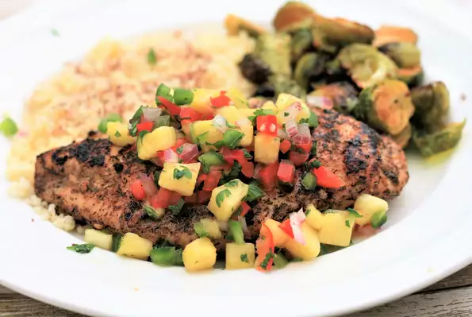

Pineapple Salsa Chicken

My Grandma's Recipe
These flavorful chicken breasts are grilled to perfection, then topped with a sweet and spicy, colorful pineapple salsa. The dish is mildly spicy, however you can adjust the amount of jalapeno to suit your tastes. Use your favorite brand of seasoning and adjust the salt right before serving, as some brands are saltier than others.
Ingredients
chicken:
- 4 (6 ounce) boneless, skinless chicken breasts
- 1 tablespoon olive oil
- 2 tablespoons Jamaican jerk seasoning
Salsa:
- 1 cup diced pineapple
- 1/4 cup diced red bell pepper
- 1 small jalapeno pepper, seeded and minced
- 2 tablespoons minced red onion
- 2 tablespoons minced fresh cilantro
- 1 tablespoon lime juice
- 1/4 teaspoon salt
Steps
- Preheat an outdoor grill for medium-high heat and lightly oil the grate.
- Pound chicken to a 1-inch thickness for even grilling. Brush oil over chicken and sprinkle Jamaican jerk seasoning evenly on both sides. Set aside.
- Combine pineapple, red pepper, jalapeno pepper, red onion, cilantro, lime juice, and salt in a small bowl for the salsa. Set aside.
- Place chicken on the hot grill and lower heat to medium. Grill until chicken is no longer pink in the center and juices run clear, 12 to 14 minutes, turning halfway through. An instant-read thermometer inserted into the center should read at least 165 degrees F (74 degrees C). Transfer to a plate to rest for 5 minutes.
- Top chicken with salsa mixture and serve.